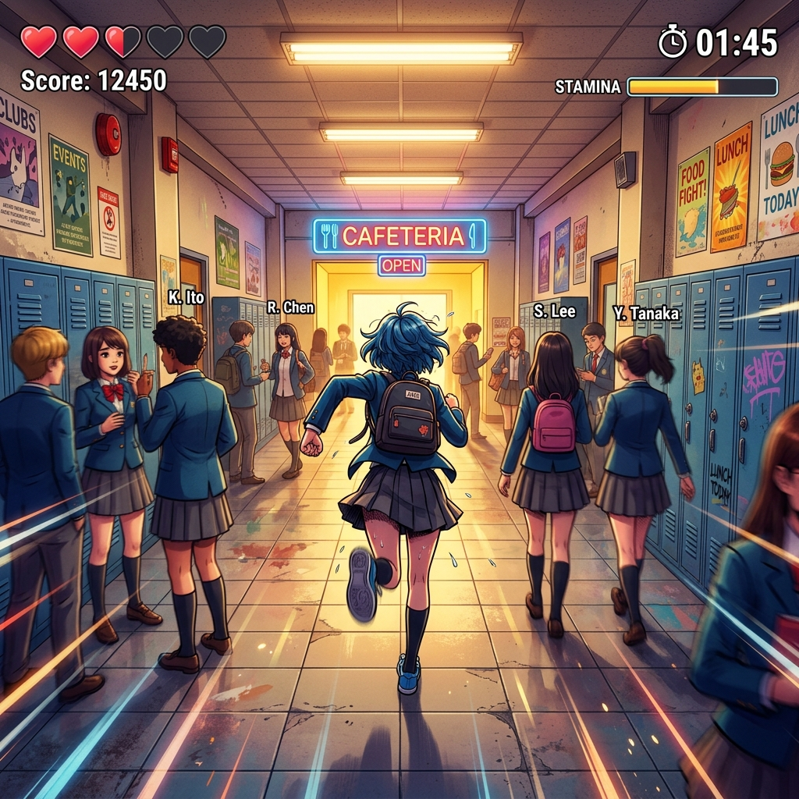
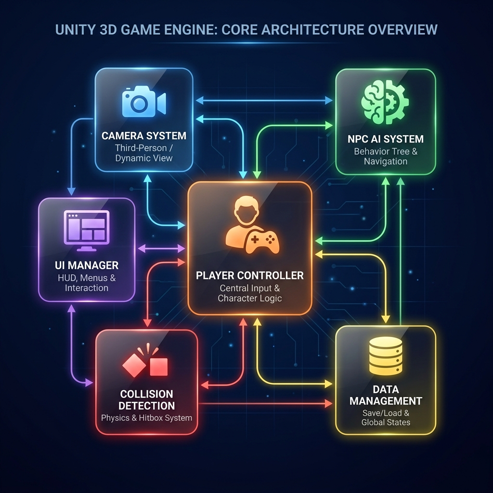
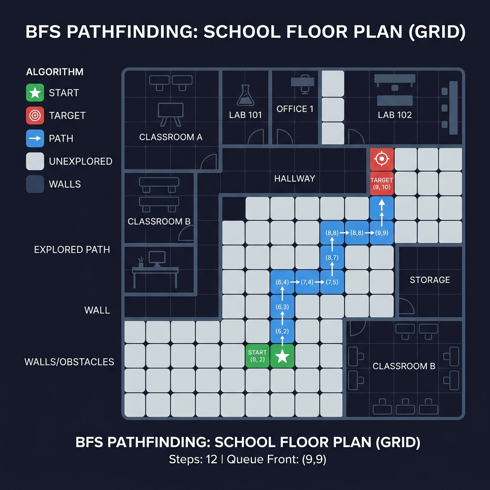
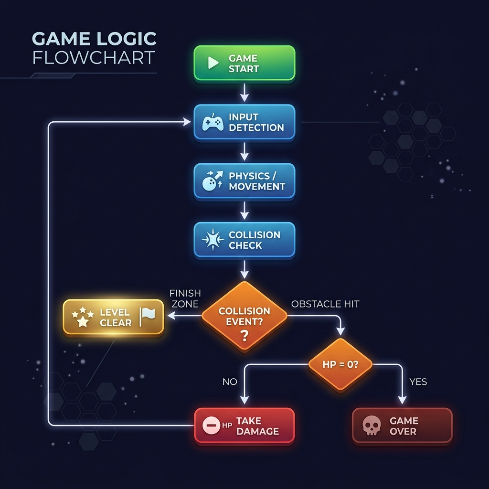

인공지능을 활용한
랜덤 장애물 회피 게임 개발
알고리즘 프로젝트 보고서 및 발표자료
1. 프로젝트 개요
메인 테마 및 기획 의도
인기 런게임 '쿠키런'의 긴장감 높은 메커니즘을 3D 환경에 이식했습니다. 플레이어는 자동으로 점진 가속하며 전진하고, 학교 건물을 모티브로 디자인된 맵에서 급식실을 향해 달려갑니다.
핵심 차별화 기술
고정되어 패턴이 단순한 일반적인 런게임 장애물과 다릅니다. 이 게임에는 확률 기반 무작위 이동 알고리즘이 적용된 학생 NPC 장애물이 동작하여 플레이어에게 고도의 동체시력과 순발력을 요구합니다.

2. 시스템 아키텍처

-
Player Control System
Unity New Input System 연계. 마우스 델타 값과 감도를 조합해 캐릭터를 부부럽게 좌우 회전시키며, 점프·슬라이딩·대쉬 입력을 물리 연산(CharacterController)과 결합.
-
Dynamic Camera System
플레이어 속도와 대쉬 상태에 따라 FOV(시야각)를 부드럽게 조정하여 스피드감 부여. 피격 감지 시 Perlin Noise 알고리즘 기반 거친 카메라 흔들림 수행.
-
NPC AI System
각 NPC는 독립된 상태 타이머를 지니며, 가중치 기반 난수 연산으로 목표 좌표를 선정한 뒤 격자 좌표계 기반 최단경로 탐색 수행.
3. 적용된 자료구조 및 알고리즘
확률 가중치 및 선형 보간 (Lerp)
-
확률 가중치 기반 무작위 타겟 선택
NPC는 내장된 타이머가 특정 주기에 도달하면, 난수를 생성하고 사전에 정의된 각 행동 확률 가중치에 맞춰 다음 목표 지점 설정.
-
선형 보간 (Vector3.Lerp) 경로 평활화
목표 좌표로 NPC가 텔레포트하는 어색함을 막기 위해 프레임에 독립적인
Vector3.Lerp를 적용해 실제 학생이 걷는 것 같은 자연스러운 움직임 유도.
타이머 구조 및 AABB 충돌
-
상태 기반 타이머 구조 (Timer Management)
복잡하고 무거운 상태 머신(FSM) 대신, 무적시간(
hitCooldownTimer), 감속시간(slowTimer) 등 실수형 타이머를 매 프레임 업데이트 연산으로 관리. -
AABB 충돌 판정 및 트리거
Unity BoxCollider 및 CharacterController 연산을 활용해 3차원 바운딩 박스가 겹치는 순간 실시간 감지, 플레이어 체력 차감 및 화면 진동 이벤트 트리거 연계.
4. 핵심 알고리즘: BFS 격자 경로 탐색
이 게임의 적(NPC 학생)은 무지성으로 전진하지 않고, 자신의 시작 위치(Origin) 주변 격자 맵을 바탕으로 BFS(너비 우선 탐색) 알고리즘을 사용해 유연하게 목표를 향해 이동합니다.
동작 단계:
- NPC는 월드 좌표계를
WorldToCell()함수를 통해 격자 셀(Vector2Int)로 변환합니다. - 목표 셀이 결정되면 시작 셀에서부터 최단경로 탐색을 위한 BFS 큐(
Queue<Vector2Int>) 연산을 실행합니다. - 이미 탐색한 경로 및 벽(장애물) 정보를 필터링하여 최단 경로를 구성하는 노드 리스트를 복원하고, 다시 월드 좌표로 되돌려 경로(Waypoints)로 삼습니다.

5. 인터랙티브 BFS 경로 탐색 시뮬레이션
6. 핵심 코드 분석: NPC 이동 & 스포너
// Obstacle.cs 내의 BFS 최단경로 산출 알고리즘 private void BuildBfsPath(Vector3 destination) { path.Clear(); pathIndex = 0; float cellSize = Mathf.Max(0.1f, bfsCellSize); Vector2Int start = WorldToCell(transform.position, cellSize); Vector2Int goal = WorldToCell(destination, cellSize); Queue<Vector2Int> queue = new Queue<Vector2Int>(); Dictionary<Vector2Int, Vector2Int> previous = new Dictionary<Vector2Int, Vector2Int>(); queue.Enqueue(start); previous[start] = start; while (queue.Count > 0) { Vector2Int current = queue.Dequeue(); if (current == goal) break; foreach (Vector2Int dir in directions) { Vector2Int next = current + dir; if (previous.ContainsKey(next)) continue; previous[next] = current; queue.Enqueue(next); } } }
// ObstacleSpawner.cs 내의 최소 거리 배치 스포닝 public void SpawnBatch() { GameObject[] targets = GameObject.FindGameObjectsWithTag(targetTag); int spawned = 0; while (spawned < spawnCount) { GameObject target = targets[Random.Range(0, targets.Length)]; Vector3 pos = GetTopPosition(target) + Vector3.up * spawnHeightOffset; // 스폰 오브젝트 간 겹침 방지 검사 if (IsFarEnough(pos)) { Instantiate(obstaclePrefabs[Random.Range(0, obstaclePrefabs.Length)], pos, Quaternion.identity); usedPositions.Add(pos); spawned++; } } }
게임 내 많은 수의 NPC가 동시에 경로 연산을 수행하여 렉이 발생하는 현상을 방지하기 위해
sqrMagnitude 가시거리 연산을 통해 플레이어 근처의 활성화된 NPC만 깨어나 BFS를 수행하도록 최적화했습니다.
IsFarEnough() 메소드를 활용해, 이미 생성된 NPC 간의 거리를 minSpacing 제곱값(sqrMagnitude)으로 빠르게 비교 연산하여 연산 효율을 높였습니다.
7. 핵심 코드 분석: 플레이어 & 카메라
// PlayerController.cs 피격 및 속도 감속 로직 public void HitObstacle(string obstacleName) { if (cleared || hitCooldownTimer > 0f) return; hitCooldownTimer = hitCooldown; // 무적 타이머 slowTimer = slowDuration; // 감속 타이머 currentSpeed = Mathf.Max(startSpeed, currentSpeed - hitSpeedLoss); hearts = Mathf.Max(0, hearts - 1); heartUI?.SetHearts(hearts, maxHearts); // 카메라 Perlin Noise 흔들림 연출 연계 followCamera?.Shake(0.45f, hearts <= 0 ? 1.2f : 0.75f); if (hearts <= 0) { Die(); // 게임오버 코루틴 실행 } }
// FollowCamera.cs Perlin Noise 카메라 셰이크 알고리즘 private Vector3 GetShakeOffset() { if (shakeTimer <= 0f) return Vector3.zero; shakeTimer -= Time.deltaTime; float power = shakeStrength * (shakeTimer / shakeDuration); // 단순 Random 난수가 아닌 Perlin Noise로 부드러운 거친 진동 구현 float x = (Mathf.PerlinNoise(Time.time * shakeFrequency, 0.17f) - 0.5f) * 2f; float y = (Mathf.PerlinNoise(0.41f, Time.time * shakeFrequency) - 0.5f) * 2f; return transform.right * x * power + transform.up * y * power; }
Mathf.PerlinNoise를 사용한 진동은 매 프레임 임의의 난수로 진동시키는 Random.insideUnitSphere에 비해 파동이 유기적으로 부드럽게 이어지므로 3D 멀미를 방지하면서도 타격감을 크게 증가시킵니다.
체력 0 도달 시 단순 리셋이 아닌, 플레이어 모델이 거칠게 회전(Spin)하며 공중으로 튕겨져 나간 뒤 점점 투명하게 사라지도록
IEnumerator 코루틴을 통해 정교한 연출을 하였습니다.
8. 카메라 연출 및 피격 시뮬레이터
속도 슬라이더를 높이면 우측 가상 화면의 3D 원근 앵글(FOV)이 60도에서 72도까지 확대되어 스피드감을 향상시킵니다.
피격 버튼을 클릭하면 체력(하트)이 차감되며 Perlin Noise 알고리즘을 적용한 셰이크가 렌더링 영역에 적용됩니다.
9. 실행 결과 및 알고리즘 동작 분석
자연스러운 동적 장애물 구현
가중치 난수로 다음 셀을 구한 뒤 Vector3.Lerp를 적용해, NPC가 순간이동하는 현상 없이 장애물 역할을 자연스럽게 수행합니다. 고정 장애물보다 훨씬 뛰어난 몰입감을 느낄 수 있습니다.
리플레이 가치 창출 (Replay Value)
확률 가중치 기반 무작위 이동 덕분에 매 판 플레이할 때마다 NPC들의 배치와 이동 경로가 달라집니다. 따라서 단순 길을 외우는 암기식 플레이가 불가능하며 다채로운 즐거움을 줍니다.

10. 프로젝트 수행 소감 및 부록
팀원 수행 소감
유은재: 처음으로 Unity에서 3D 맵을 설계해보았습니다. 과거 언리얼 엔진으로 학교 IT관을 모델링했던 역량을 활용하여 빠르게 공간을 조형할 수 있었고 Unity만의 컴포넌트 시스템을 이해하게 되었습니다.
황동화: 첫 3D 게임 제작이라 모든 것이 흥미로웠습니다. 3D 모델의 복잡한 애니메이션이 런타임 상에서 Animator와 스크립트로 상호작용하는 과정이 매우 신기했습니다.
역할 분담
- 황동화: 학교 건물 3D 맵 제작, 플레이어 & 카메라 컨트롤러 C# 스크립트 작성, AI 디버깅 보조
- 유은재: 학교 건물 3D 맵 조형, C# UI 스크립트, NPC BFS AI 작성, PPT 보고서 및 자료 정리
AI 활용 및 부록
C# 스크립트 초안 고안, 마우스 카메라 턴 회전 보정 및 Animator 회전 충돌 문제를 해결하기 위해 ChatGPT를 활용했습니다.